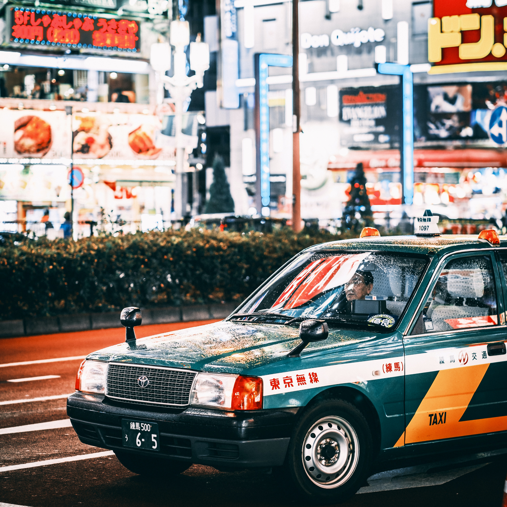

McLaren's 720s is headed to an interesting place in a couple of years...
Top 10 things you need in your garage!
It's not just the people who become legends. Cars do, too.

How Japanese JDM car culture impacted the everyday life